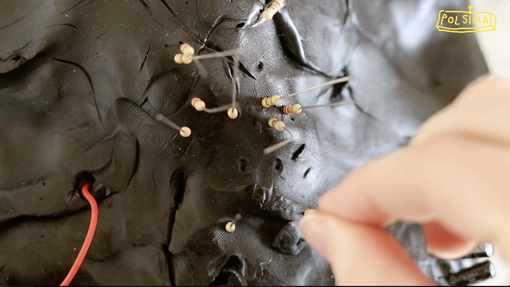
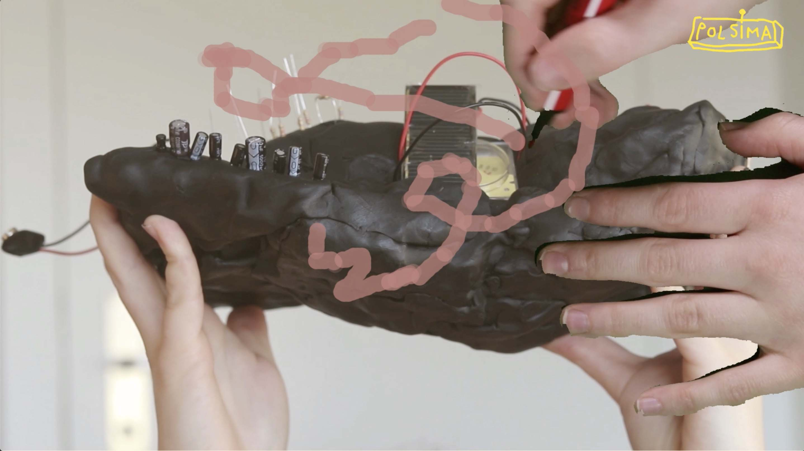
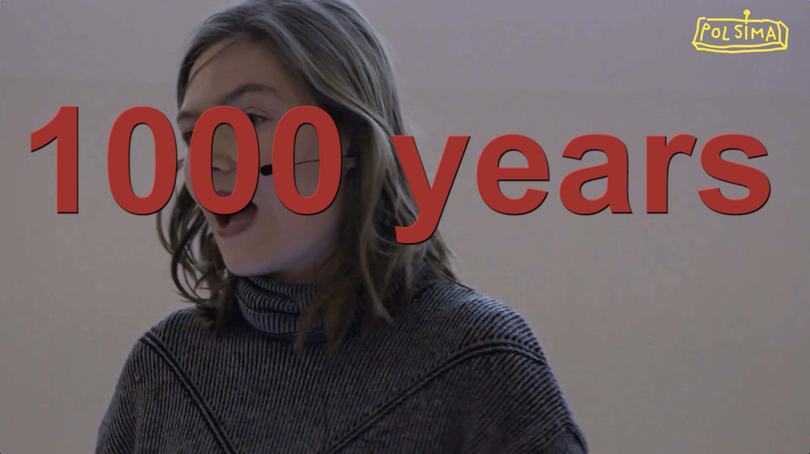
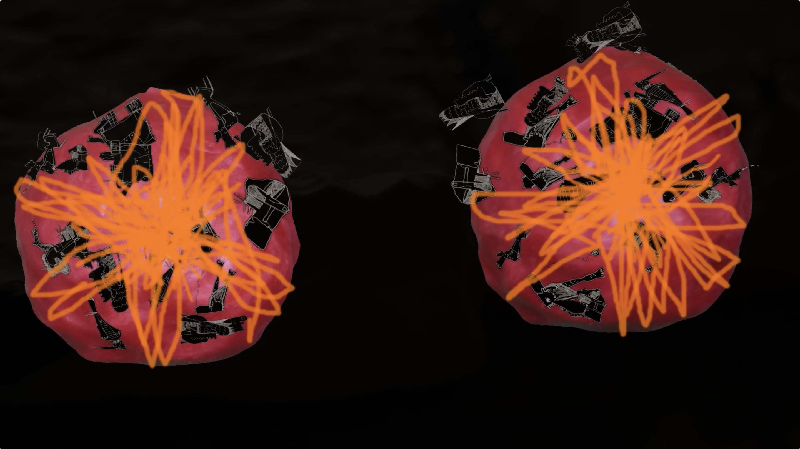
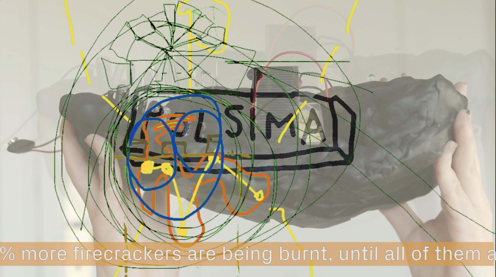
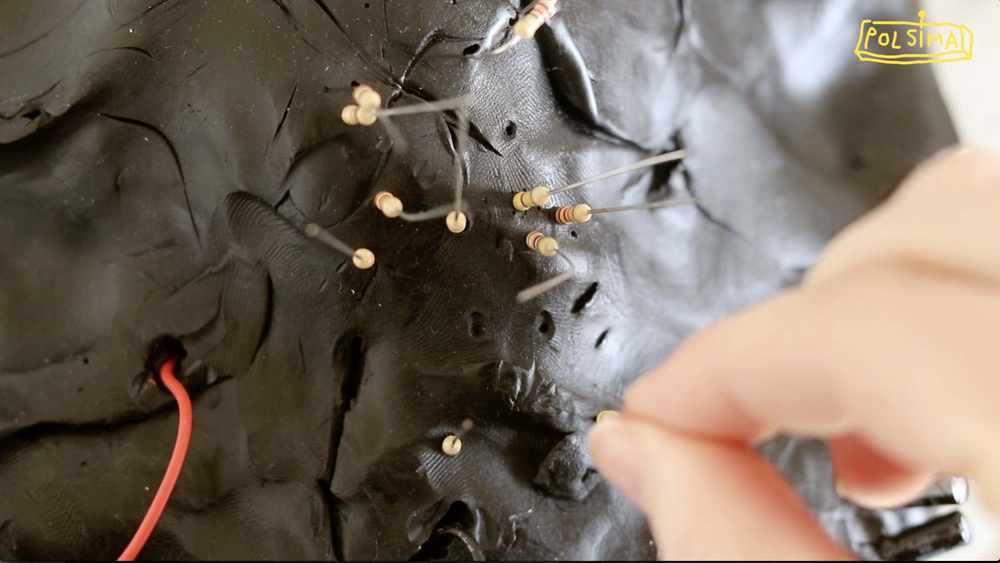
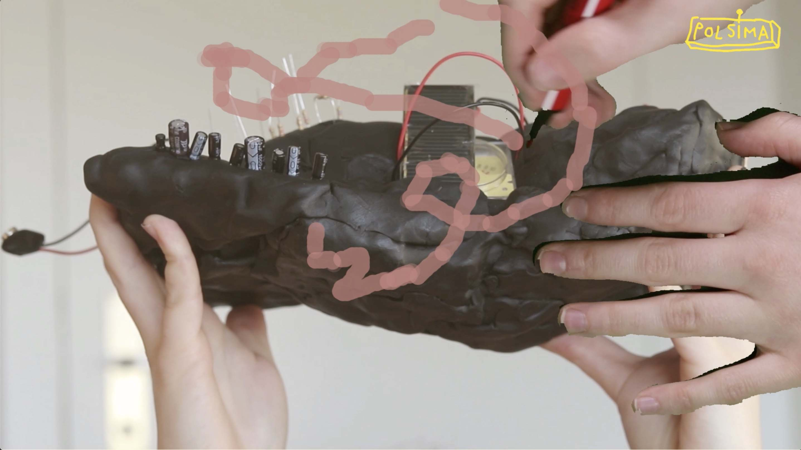
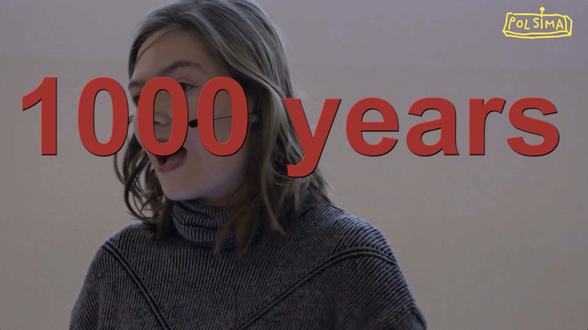
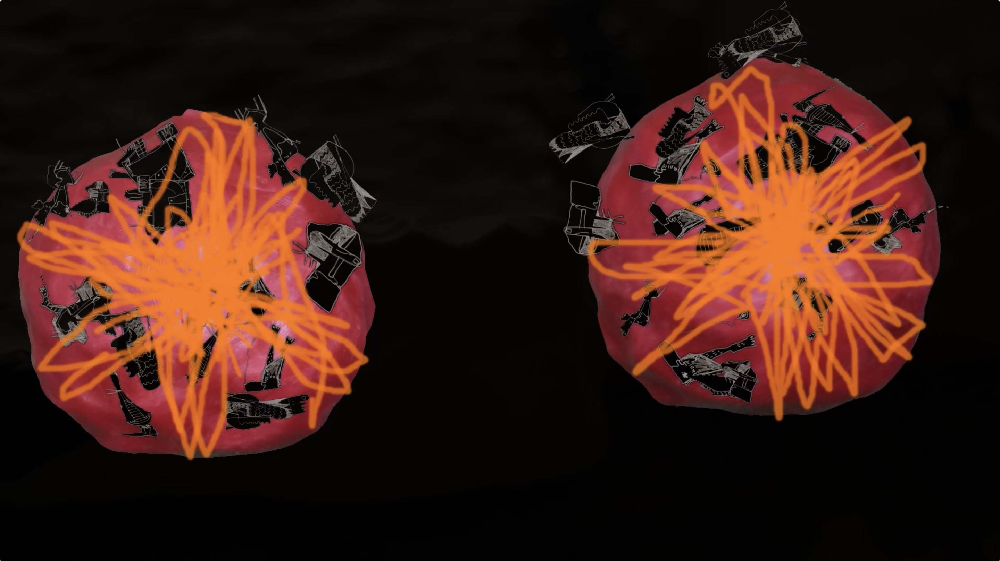
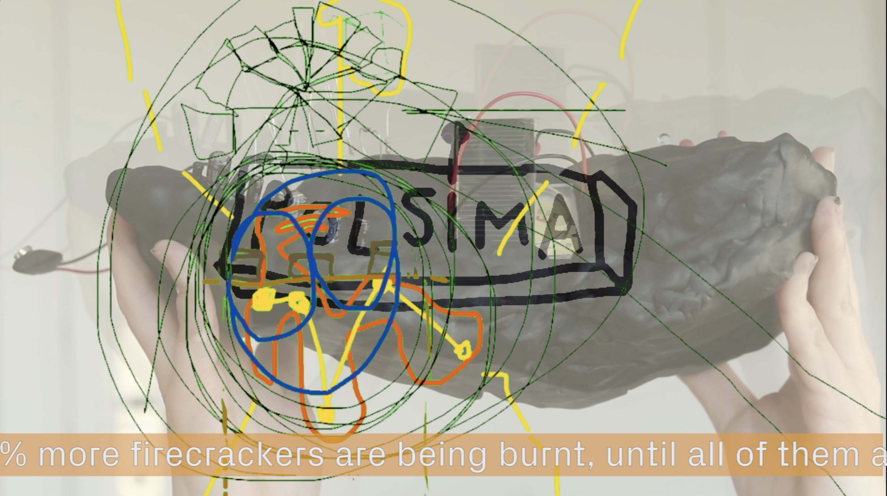

> to selected works
POLSIMA
2019
4-channel video installation
HD, 16:9, 10:12, loop, stereo
sound: Timon Kurz
M8 Art Space, Helsinki, FIN
“We will be able to calculate the future outcome of every tiny decision we take today. We will be able to form the society and the planet we want. Would you like to be part of this movement?”
Polsima, the political-simulator machine, is a highly complex device that can calculate and visually simulate all the future consequences of any political decision. The algorithm is shaped by scientists from all possible disciplines and promises to end political speculations, so finally politics can not fail any more.
This product’s dream-like handicraft and intimate aesthetics soon intertwines with our personal affections at some unnoticed yet undeniable point. There is an inherent horror in the prediction of complex networks of causal events with absurdity always looming close, despite its initial intentions will ‚polsima‘ fulfill a utopian purpose or operate as an object of desire and a neoliberal instrument of power.
Text: Edel O'Reilly
////////
2020
Happening, video installation
Table, chair, paper, Polsima pen, Polsima key ring, crayon on window pane, cups, plasticine, resistors, condensers, LEDs, wires, strands, cables, motion detectors, temperature gauge, push buttons, microphone on microphone stand, interface, computer, Arduino modules, ventilation pipes, metal frame, plexy glass, double projection on screen
Videos: X times 17 seconds, HD, 4:3, without sound, activated by pressing a button
Sattelkammer Bern
Polsima Launch: During the installative happening the machine is introduced, opened up and tested. The inner structures and technical complexities are shown openly, and the panes of the space become a shell; the random videos - Polsima's calculated visions or simulations - are projected onto a rear projection screen, so they can be read from the outside as well as the inside. The videos each contain two juxtaposed versions of the future, which, fictitiously, refer to the political question posed and represent an "If No, then:" or an "If Yes, then:". The virtual cameras move like a roller coaster through the cross-section of animated ropes, which are located in an empty void surrounded by abstract drawings that derive from circuit diagrams. The "content" of the rope is a mixture of animated drawings of our planet and found footage arranged by color.
On the second large window, in the office, a similar "circuit diagram drawing" is also visible from the outside and inside. The performer (Alexandra Anderhalden) balances between the figure of a scientist and that of a fair saleswoman, oscillating between rational logic and emotional visionary. She guides the visitors through the functions of the machine.